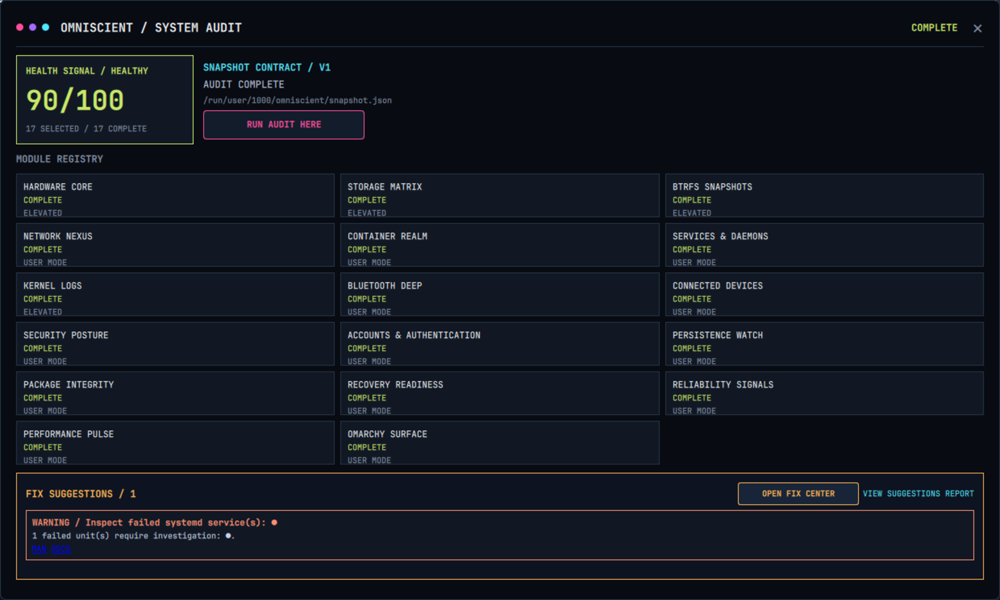
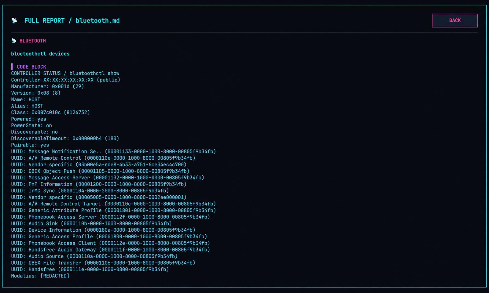
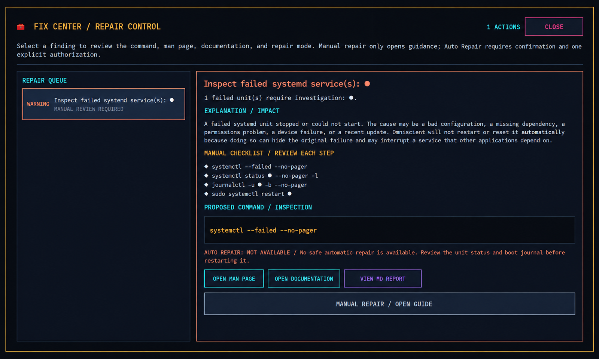
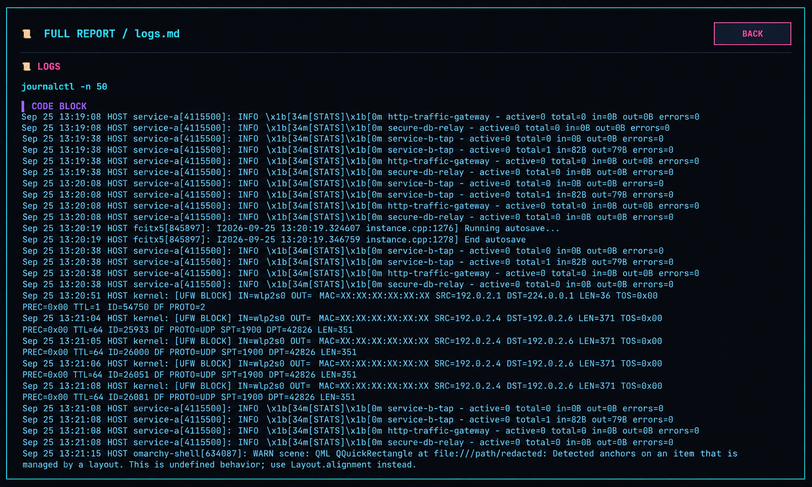
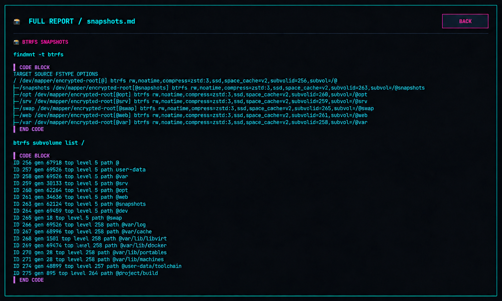

01 / DISCOVERY
Hardware core
CPU, USB, PCI, memory, and machine identity.
hw://inventoryOmniscient turns Linux inspection into one readable, repeatable surface — hardware, storage, services, network state, capabilities, and the report that connects them.
The Cybercore schema stays the connective tissue: shared color keys, shared tokens, shared operator language. Omniscient makes the signal actionable while keeping the first pass read-only.
CPU, USB, PCI, memory, and machine identity.
hw://inventoryBlock devices, SMART health, and Btrfs snapshots.
io://storageInterfaces, sockets, Bluetooth, and connected devices.
net://surfaceSystemd units, kernel logs, and container inventory.
svc://runtimeListeners, firewall state, accounts, persistence, and package integrity.
secure://postureFilesystem readiness, hardware reliability, performance, and Omarchy health.
system://resilienceA linked Markdown report with nothing silently hidden.
report://summaryOmniscient reads the same palette contract as every Cybercore surface. The page, the dashboard, and the reports speak in the same tokens — bg, fg, acid, cyan, pink, panel, line, muted.
Paths stay portable through XDG defaults, privileged modules ask clearly, and unavailable tools remain visible instead of becoming false green checks.
{
"schema_version": 2,
"active": "neon-night",
"surface": "omniscient",
"paths": {
"sysops_root": "~/.sysops",
"report_root": "$XDG_STATE_HOME/omniscient"
}
}Pick a focused pass or run the full system audit. Optional tools are reported as optional — never disguised as failure.

Every run ends in a linked Markdown report beneath ~/.local/state/omniscient/. The summary keeps command failures, missing capabilities, and health signals in view.
PASS hardware.md PASS network.md WARN smartctl unavailable PASS SUMMARY.md
One continuous surface for the audit, repair decision, and evidence trail. The public captures are sanitized and color-matched as a single gallery.





Stable Rust, a real terminal, and a Linux system worth understanding.